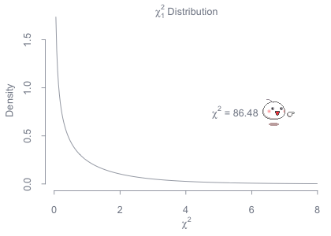
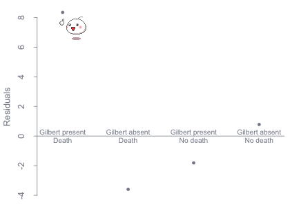

This article discusses the statistical method of hypothesis testing and its role in the 2001 federal court case that sentenced serial killer Kristen Heather Gilbert to life in prison without possibility for parole plus twenty years. We begin with a bit of background information on Gilbert and the crimes on which she was convicted.
In 1989, Gilbert began her career as a registered nurse in Ward C of Veterans Affairs Medical Center (VAMC) in Northhampton, Massachusetts. By April of the following year, she had made a name for herself as an expert in recognising and responding to patients in need of emergency medical attention.
While a few other nurses had taken notice of increases in the number of hospital crises and deaths while Gilbert was on duty, many passed it off as mere coincidence and even jokingly nicknamed her the "Angel of Death." It wasn't until late 1996 when three nurses finally reported their concerns regarding an unmistakably high number of deaths resulting from cardiac arrest as well as a mysterious deficit in the hospital supply of synthetic epinephrine, a heart stimulant.
This prompted the hospital to launch an investigation, amid which Gilbert resigned from her position as a nurse. A preliminary analysis directed attention back to the fact that these deaths occurred more frequently during Gilbert's assigned shifts. Let's now discuss hypothesis testing and how it was used to show that this was more than mere speculation.
First off, we have to realize that the data we have to work with is categorical. That is, each datum takes on a value that is either a name or a label, as opposed to a measurable quantity. For instance, when asked whether or not Gilbert was assigned a shift on a particular evening, we simply answer with yes or no; we don't say she was half-assigned a shift or that she was half-present.
Next, we ask what we wish to learn from our test. Specifically, we want to know whether or not there is an association between our two variables: the instance of Gilbert's presense and the instance of a death during a shift. In addition to the large sample size, these facts justify the use of a chi-square test for independence.
The use of a chi-square test for independence involves several steps, the first of which is to state clearly the hypotheses we wish to test. We begin with a null hypothesis, which we will attempt to disprove in favor of an alternative hypothesis:
Our test assumes the null hypothesis is true, and the P-value produced later on is the probability of seeing the observed data given this assumption. At this point, we will also choose our significance level, a predetermined cut-off for the P-value below which we reject H0. We'll use the standard 0.05 significance level, meaning we will reject the null hypothesis if the probability of finding such deviant data under H0 is less than 5%.
Once we have the marginal row and column sums, we can compute the table of expected frequencies for each cell using the formula $\frac{ n_{ row } \thinspace \cdot \thinspace n_{ column } }{ n_{ total } }$. We define the chi-square test statistic to be $\chi ^{ 2 } = \sum { \frac { \left( Observed \thinspace - \thinspace Expected \right) ^{ 2 } }{ Expected } }$, and from there we can calculate our P-value. Please take a moment out to verify and convince yourself that the calculations below are correct.
| Gilbert | Death | No death | Total |
| Present | 40 | 217 | 257 |
| Absent | 34 | 1350 | 1384 |
| Total | 74 | 1567 | 1641[1] |
| Expected | |
|---|---|
| 11.59 | 245.41 |
| 62.41 | 1321.59 |
| $\chi ^{ 2 }$ Components | |
|---|---|
| 69.65 | 3.29 |
| 12.93 | 0.61 |
| $\chi ^{ 2 } = 86.48$ |
| $P \operatorname{ - } value \approx 0$ |
At this point, it may seem completely arbitrary how we arrived at this P-value, but we assure you that there in fact exists a chi-square distribution to consult. If you own a statistics textbook, it is almost certain that a table for this distribution is included among the appendices. For those of you studying probability theory, it may be useful to know that the chi-square distribution with $n$ degrees of freedom is equivalent to the gamma distribution with shape parameter $\frac{ n }{ 2 }$ and rate parameter $\frac{ 1 }{ 2 }$. And to state it simply for those completely new to the idea of probability distributions: a probability distribution assigns each selectable element in a given sample space a probability of selection. A hypothesis (like our H0) necessarily defines a probability distribution, so the P-value is the probability of selecting an element or set of elements, if in fact our null hypothesis is true.
You may also be wondering what degrees of freedom are, and one of the most general and most commonly cited answers to that question is that it is a count of the number of values in the final calculation of a statistic that are free to vary. Now, let's slow down for a moment. In this example, there are four values involved in the calculation of our chi-square test statistic (one for each of the four cells), but only one is free to vary. This means, for instance, that given the constraints of our study (for one, the fact that there were exactly 74 shifts during which a death occurred and exactly 1567 during which a death did not occur, and exactly 257 shifts that Gilbert was assigned and exactly 1384 shifts that Gilbert was not assigned), we only need to know one of the four cell counts before the other three are already determined. You can explore this concept in our tutorial below. The important thing to know is that the number of degrees of freedom in a chi-square test involving a contingency table is given by
\[df = \left( number \thinspace of \thinspace rows - 1 \right) \left( number \thinspace of \thinspace columns - 1\right).\]
Below to the left is a visual representation of how the P-value was determined: the area under the curve and to the right of the chi-square statistic is the corresponding P-value. Notice that our test statistic is far off to the right, nowhere near the bulk of our distribution's density, hence our miniscule P-value. To the right of it is a residual plot, where each residual is computed using the formula $\frac{Observed \thinspace - \thinspace Expected}{\sqrt{Expected}}$. This plot shows how much each component is contributing to the total value of $\chi ^{ 2 }$.
 
Our P-value indicates that we would probably never see this under the assumption of H0. Because we have gathered data that is so deviant from what we would expect to see under that assumption, the responsible course of action is to reject the null hypothesis; the instance of death on a shift was not independent of whether or not Gilbert was present.
You may have noticed that changing just one cell in the table of observed values changes them all. This has to be the case given the constraints of our study: a death occurred in exactly 74 shifts, Gilbert was present for exactly 257 shifts, and there were exactly 1641 total shifts. To illustrate this by means of an example, suppose Gilbert was present at 20 shifts during which a death occurred. We know exactly 74 shifts had a death, so the number of shifts with a death and that Gilbert did not work must be 70 - 20 = 54. Likewise, we know Gilbert wsa present at exactly 257 shifts, so the number of shifts without a death and that Gilbert worked must be 257 - 20 = 237. Lastly, because there were 1641 total shifts, the number of shifts both without a death and which Gilbert did not work must be 1641 - 20 - 54 - 237 = 1330. This is analogous to saying the test had one degree of freedom: only one of the components here were free to vary, and the rest were then determined as a consequence of the first.
It may also have come to your attention that as the table of observed counts deviated further from the table of expected counts, the $chi ^{ 2 }$ statistic increased and the P-value decreased. This is because the $chi ^{ 2 }$ statistic is really a measure of how much the data deviates from what we would expect to see under the null hypothesis. The higher the test statistic, the less likely we would be to see it. Hence, the P-value decreases, and whether this probability is above or below the threshold we know as the our significance level determines the outcome of our hypothesis test (whether we think it is feasible that our null hypothesis is true).